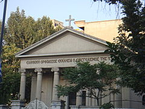
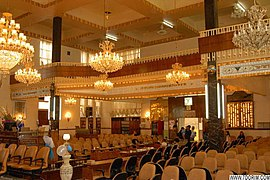
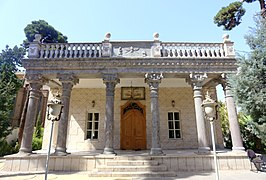
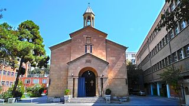
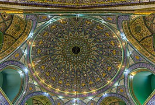

Tehran (/tɛəˈræn, -ˈrɑːn, ˌteɪə-/; Persian: تهران Tehrān [tehˈɾɒːn] (About this soundlisten)) is the capital of Iran and Tehran Province. With a population of around 8.7 million in the city and 15 million in the larger metropolitan area of Greater Tehran, Tehran is the most populous city in Iran and Western Asia,[6] and has the second-largest metropolitan area in the Middle East, after Cairo). It is ranked 24th in the world by metropolitan area population. It is also known for its sprawling development and futuristic architecture, epitomized by the Milad Tower and the Fereshteh Pasargad Hotel, designed by Zaha Hadid.[7] In the Classical era, part of the territory of present-day Tehran was occupied by Rhages, a prominent Median city[8] destroyed in the medieval Arab, Turkic, and Mongol invasions. Modern Ray is urban area absorbed into the metropolitan area of Greater Tehran . Tehran was first chosen as the capital of Iran by Agha Mohammad Khan of the Qajar dynasty in 1786, because of its proximity to Iran's territories in the Caucasus, then separated from Iran in the Russo-Iranian Wars, to avoid the vying factions of the previously ruling Iranian dynasties. The capital has been moved several times throughout history, and Tehran is the 32nd national capital of Persia. Large-scale demolition and rebuilding began in the 1920s, and Tehran has been a destination for mass migrations from all over Iran since the 20th century.[9] Tehran is home to many historical locations, including the royal complexes of Golestan, Sa'dabad, and Niavaran, where the two last dynasties of the former Imperial State of Iran were seated. Tehran's most famous landmarks include the Azadi Tower, a memorial built under the reign of Mohammad Reza Shah of the Pahlavi dynasty in 1971 to mark the 2,500th anniversary of the founding of the Imperial State of Iran, and the Milad Tower, the world's sixth-tallest self-supporting tower, originally planned by the Shah, completed in 2007, and the Tabiat Bridge, completed in 2014.[10] Most of the population are Persian,[11][12] and roughly 99% of them understand and speak the Persian language, but large populations of other ethno-linguistic groups live in Tehran and speak Persian as a second language.[13] Tehran has an international airport (Imam Khomeini Airport), a domestic airport (Mehrabad Airport), a central railway station, a rapid transit system, Tehran Metro, a bus rapid transit system, trolleybuses, and a large network of highways. Plans to relocate Iran's capital from Tehran to another area, due to air pollution and earthquakes, have so far not yet received approval. A 2016 survey of 230 cities by consultant Mercer ranked Tehran 203rd for quality of life.[14] According to the Global Destinations Cities Index in 2016, Tehran is among the top ten fastest growing destinations.[15] The City Council declared October 6 Tehran Day in 2016, celebrating the day in 1907 when the city officially became the capital of Iran.[16]
Various theories on the origin of the name Tehran have been put forward. Iranian linguist Ahmad Kasravi, in an article "Shemiran-Tehran", suggested that Tehran and Kehran mean "the warm place", and "Shemiran" means "the cool place". He listed cities with the same base and suffix and studied the components of the word in ancient Iranian languages, and came to the conclusion that Tehran and Kehran meant the same thing in different Iranian language families, as the constant "t" and "k" are close to each other in such languages. He also provided evidence that cities named "Shemiran" were cold, and those named "Tehran" or "Kehran" very hot. He considered other theories not considering ancient history of Iranian languages such as "Tirgan" theory and "Tahran" theory folk etymology.[17] Another theory is that "Tehran" derives from Tiran/Tirgan, "the abode of Tir", the Zoroastrian equivalent of Hermes). The ancient Parthian town of Tiran had a neighbour, Mehran ("abode of Mehr/Mithra", the Zoroastrian sun god). Both of these were mere villages in the suburbs of the great city of Ray/Rhages. Mehran still exists as a residential district in Greater Tehran, as well as Ray, which forms the southern suburbs of Tehran. The official City of Tehran website says that "Tehran" comes from the Persian words "Tah" meaning "end or bottom" and "Ran" meaning "[mountain] slope"—literally, the bottom of the mountain. Given Tehran's position at the foot of the Alborz mountains, this seems plausible. (دامنه ی بین دو کوه).[18]
Tehran is in the historical Media region of (Old Persian: 𐎶𐎠𐎭 Māda) in northwestern Iran. By the time of the Median Empire, part of present-day Tehran was a suburb of the prominent Median city of Rhages (Old Persian: 𐎼𐎥𐎠 Ragā). In the Avesta's Videvdat (i, 15), Rhages is mentioned as the 12th sacred place created by Ohrmazd.[20] In Old Persian inscriptions, Rhages appears as a province (Bistun 2, 10–18). From Rhages, Darius I sent reinforcements to his father Hystaspes, who was putting down a rebellion in Parthia (Bistun 3, 1–10).[20] Some Middle Persian texts give Rhages as the birthplace of Zoroaster,[21] although modern historians generally place the birth of Zoroaster in Khorasan Province. Mount Damavand, the highest peak of Iran, which is located near Tehran, is an important location in Ferdowsi's Šāhnāme,[22] an Iranian epic poem based on the ancient legends of Iran. It appears in the epics as the homeland of the protoplast Keyumars, the birthplace of King Manuchehr, the place where King Fereydun bound the dragon fiend Aždahāk (Bivarasp), and the place where Arash shot his arrow.[22]
In 641, during the reign of the Sasanian Empire, Yazdgerd III issued his last appeal to the nation from Rhages, before fleeing to Khorasan.[20] Rhages was dominated by the Parthian House of Mihran, and Siyavakhsh—the son of Mehran, the son of Bahram Chobin—who resisted the 7th-century Muslim invasion of Iran.[20] Because of this resistance, when the Arabs captured Rhages, they ordered the town destroyed and rebuilt anew by traitor aristocrat Farrukhzad.[20] In the 9th century, Tehran was a well-known village, but less so than the city of Rhages, flourishing nearby. Rhages was described in detail by 10th-century Muslim geographers.[20] Despite the interest that Arabian Baghdad displayed in Rhages, the number of Arabs in the city remained insignificant and the population mainly consisted of Iranians of all classes.[20][23] The Oghuz Turks invaded Rhages in 1035 and again in 1042, but the city was recovered under the Seljuks and the Khwarezmians.[20] Medieval writer Najm od Din Razi declared the population of Rhages about 500,000 before the Mongol invasion. In the 13th century, the Mongols invaded Rhages, laid the city to ruins, and massacred many of its inhabitants.[20] Others escaped to Tehran. In July 1404, Castilian ambassador Ruy González de Clavijo visited Tehran on a journey to Samarkand, the capital of Turco-Mongol conqueror Timur, the ruler of Iran at the time. He described it in his diary as an unwalled region.
In the early 18th century, Karim Khan of the Zand dynasty ordered a palace and a government office built in Tehran, possibly to declare the city his capital; but he later moved his government to Shiraz. Eventually, Qajar king Agha Mohammad Khan chose Tehran as the capital of Iran in 1786.[25] Agha Mohammad Khan's choice of his capital was based on a similar concern for the control of both northern and southern Iran.[25] He was aware of the loyalties of the inhabitants of former capitals Isfahan and Shiraz to the Safavid and Zand dynasties respectively, and was wary of the power of the local notables in these cities.[25] Thus, he probably viewed Tehran's lack of a substantial urban structure as a blessing, because it minimized the chances of resistance to his rule by the notables and by the general public.[25] Moreover, he had to remain within close reach of Azerbaijan and Iran's integral northern and southern Caucasian territories[25]—at that time not yet irrevocably lost per the treaties of Golestan and Turkmenchay to the neighboring Russian Empire—which would follow in the course of the 19th century.[26] Map of Tehran in 1857 After 50 years of Qajar rule, the city still barely had more than 80,000 inhabitants.[25] Up until the 1870s, Tehran consisted of a walled citadel, a roofed bazaar, and the three main neighborhoods of Udlajan, Chale-Meydan, and Sangelaj, where the majority resided. The first development plan of Tehran in 1855 emphasized traditional spatial structure. The second, under the supervision of Dar ol Fonun in 1878, included new city walls, in the form of a perfect octagon with an area of 19 square kilometers, mimicking the Renaissance cities of Europe.[27] Tehran was 19.79 square kilometers, and had expanded more than fourfold. [28]
The metropolis of Tehran is divided into 22 municipal districts, each with its own administrative center. Of the 22 municipal districts, 20 are located in Tehran County's Central District, while districts 1 and 20 are respectively located in the counties of Shemiranat and Ray. Although administratively separate, the cities of Ray and Shemiran are often considered part of Greater Tehran.
Northern Tehran is the wealthiest part of the city,[31] consisting of various districts such as Zaferanie, Jordan, Elahie, Pasdaran, Kamranie, Ajodanie, Farmanie, Darrous, Qeytarie, and Qarb Town.[32][33] While the center of the city houses government ministries and headquarters, commercial centers are more located further north.
ClimateTehran has a cold semi-arid climate (Köppen climate classification: BSk) with continental climate characteristics and a Mediterranean climate precipitation pattern. Tehran's climate is largely defined by its geographic location, with the towering Alborz mountains to its north and the country's central desert to the south. It can be generally described as mild in spring and autumn, hot and dry in summer, and cold and wet in winter.As the city has a large area, with significant differences in elevation among various districts, the weather is often cooler in the hilly north than in the flat southern part of Tehran. For instance, the 17.3 km (10.7 mi) Valiasr Street runs from Tehran's railway station at 1,117 m (3,665 ft) elevation above sea level in the south of the city to Tajrish Square at 1712.6 m (5612.3 ft) elevation above sea level in the north.[34] However, the elevation can even rise up to 2,000 m (6,600 ft) at the end of Velenjak in northern Tehran. Summer is long, hot, and dry with little rain, but relative humidity is generally low, making the heat tolerable. Average high temperatures are between 32 and 37 °C (90 and 99 °F), and it can occasionally drop to 14 °C (57 °F) in the mountainous north of the city at night. Most of the light annual precipitation occurs from late autumn to mid-spring, but no one month is particularly wet. The hottest month is July, with a mean minimum temperature of 26 °C (79 °F) and a mean maximum temperature of 34 °C (93 °F), and the coldest is January, with a mean minimum temperature of −5 °C (23 °F) and a mean maximum temperature of 1 °C (34 °F).[35] The weather of Tehran can sometimes be unpredictably harsh. The record high temperature is 43 °C (109 °F) and the record low is −20 °C (−4 °F). On January 5 and 6, 2008, a wave of heavy snow and low temperatures covered the city in a thick layer of snow and ice, forcing the Council of Ministers to officially declare a state of emergency and close down the capital from January 6 through January 7.[36] Tehran has seen an increase in relative humidity and annual precipitation since the beginning of the 21st century. These are most likely afforestation projects, which include expanding parks and lakes. The northern parts of Tehran are, still, lusher than the southern parts.
The city of Tehran has a population of approximately 10 million in 2016.[47] With its cosmopolitan atmosphere, Tehran is home to diverse ethnic and linguistic groups from all over the country. The present-day dominant language of Tehran is the Tehrani variety of the Persian language, and the majority of people in Tehran identify themselves as Persians.[12][11] However, before, the native language of the Tehran–Ray region was not Persian, which is linguistically Southwest Iranian and originates in Fars, but a now extinct Northwestern Iranian language.[48] Iranian Azeris form the second-largest ethnic group of the city, comprising about 1/4[49][50] of the total population, while ethnic Mazanderanis are the third-largest, comprising about 17% of the total population.[51] Tehran's other ethnic communities include Kurds, Armenians, Georgians, Bakhtyaris, Talysh, Baloch, Assyrians, Arabs, Jews, and Circassians. According to a 2010 census conducted by the Sociology Department of the University of Tehran, in many districts of Tehran across various socio-economic classes in proportion to population sizes of each district and socio-economic class, 63% of the people were born in Tehran, 98% knew Persian, 75% identified themselves as ethnic Persian, and 13% had some degree of proficiency in a European language.[11] Tehran saw a drastic change in its ethnic-social composition in the early 1980s. After the political, social, and economic consequences of the 1979 Revolution and the years that followed, a number of Iranian citizens, mostly Tehranis, left Iran. The majority of Iranian emigrations have left for the United States, Germany, Sweden, and Canada. With the start of the Iran–Iraq War (1980–1988), the second wave of inhabitants fled the city, especially during the Iraqi air offensives on the capital. With most major powers backing Iraq at the time, economic isolation gave yet more reason for many inhabitants to leave the city (and the country). Having left all they had and have struggled to adapt to a new country and build a life, most of them never came back when the war was over. During the war, Tehran also received a great number of migrants from the west and the southwest of the country bordering Iraq. The unstable situation and the war in neighbouring Afghanistan and Iraq prompted a rush of refugees into the country who arrived in their millions, with Tehran being a magnet for much seeking work, who subsequently helped the city to recover from war wounds, working for far less pay than local construction workers. Many of these refugees are being repatriated with the assistance of the UNHCR, but there are still sizable groups of Afghan and Iraqi refugees in Tehran who are reluctant to leave, being pessimistic about the situation in their own countries. Afghan refugees are mostly Dari-speaking Tajik and Hazara, speaking a variety of Persian, and Iraqi refugees are mainly Mesopotamian Arabic-speakers who are often of Iranian heritage.
ReligionThe majority of Tehranis are officially Twelver Shia Muslims, which has also been the state religion since the 16th-century Safavid conversion. Other religious communities in the city include followers of the Sunni and Mystic branches of Islam, various Christian denominations, Judaism, Zoroastrianism, and the Baháʼí Faith. There are many religious centres scattered around the city, from old to newly built centres, including mosques, churches, synagogues, and Zoroastrian fire temples. The city also has a very small third-generation Indian Sikh community with a local gurdwara that was visited by the Indian Prime Minister in 2012.[52]
    